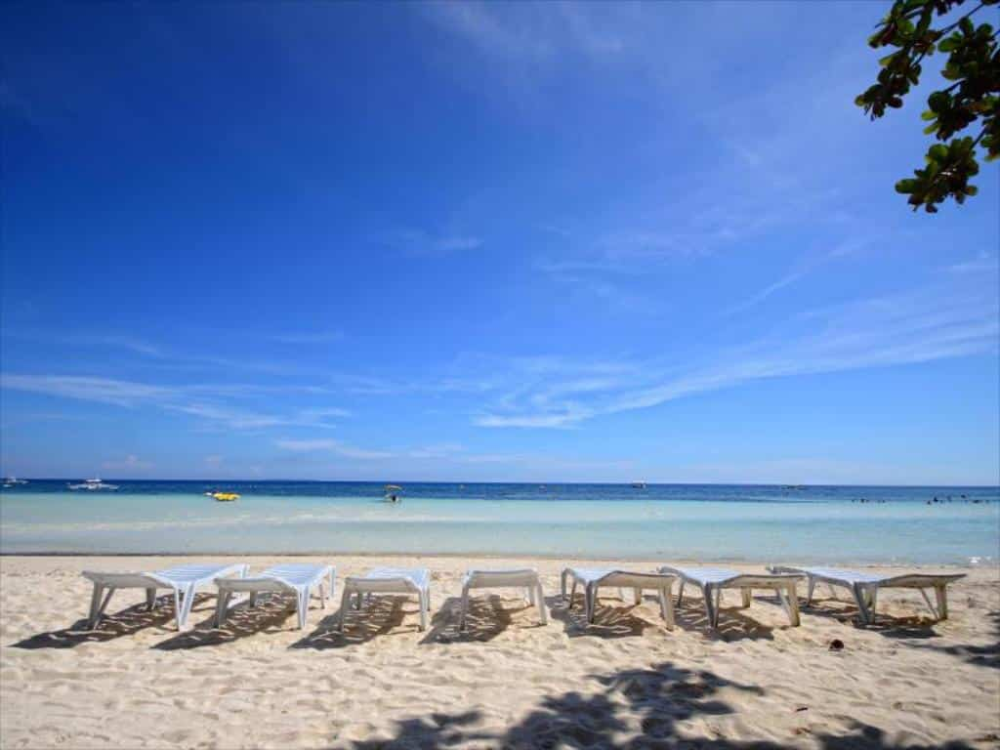
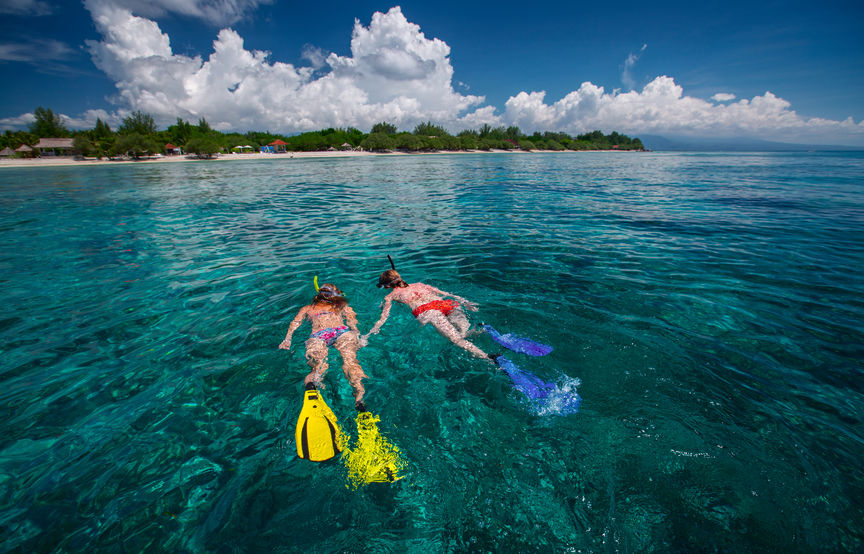
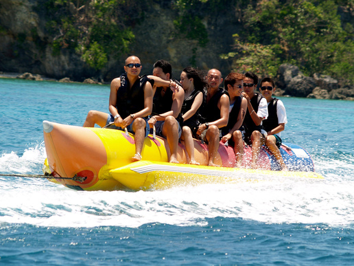
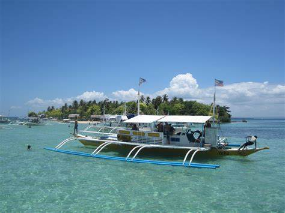
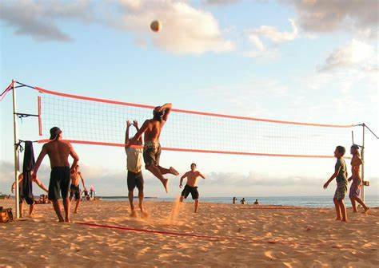
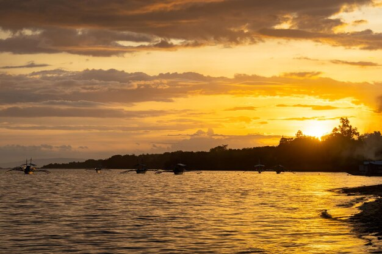

Escape to the tranquil Dumaluan Beach Resort on Panglao Island, Bohol. This beachfront haven offers a serene retreat for two
travelers seeking a slice of paradise. Lounge on the pristine white sand beach or take a dip in the refreshing swimming pool.
Indulge in delicious Filipino and international cuisine at the on-site restaurant. Stay connected with complimentary Wi-Fi and
enjoy stunning views from your private balcony. Explore nearby landmarks like Dumaluan Beach (571 meters) and Tarsier Botanika
(1872 meters). Experience the perfect blend of relaxation and adventure at Dumaluan Beach Resort.
Swimming & Sunbathing: The calm, shallow waters make it ideal for a relaxing dip or just lounging by the shore.

Snorkeling: Rent gear and explore the underwater life near the beach or join a tour to nearby snorkeling spots.

Banana Boat & Jet Ski:For a dose of excitement, you can rent these from the resort or nearby vendors.

Island Hopping Tours:Dumaluan is a great jump-off point for trips to Balicasag Island, Virgin Island, and Pamilacan Island.

Beach Volleyball or Frisbee: The wide beach offers plenty of space for some light sports and group games.

Sunset Watching: The beach faces west, so expect amazing sunsets, especially with a cold drink in hand.
